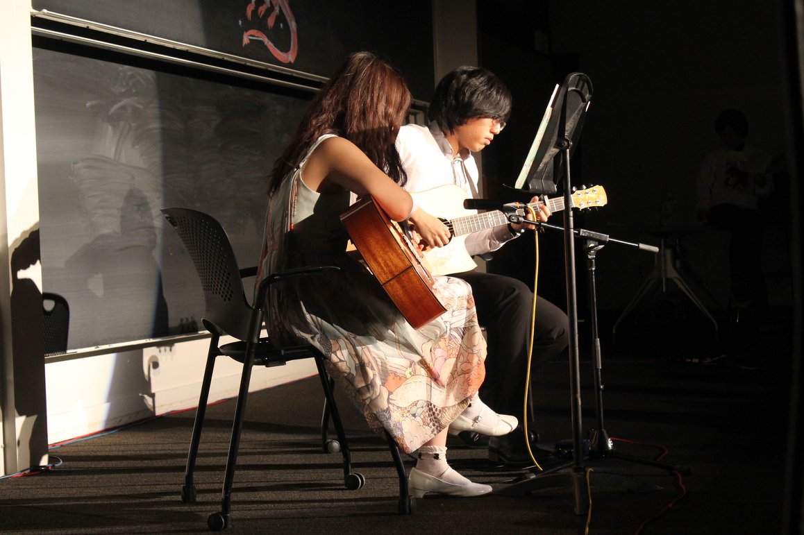

I have been doing Lolita Fashion since 2016. Even though I am kind of going MIA right now because of work, I have nevertheless modeled for major international brands including Angelic Pretty, Baby, the Stars Shine Bright and Haenuli. My Runway photo as appeared on Pittsburgh City Paper
I have been playing classical guitar for eight years(on and off). My most memorable experience is having performed with CMU classical guitar ensemble at Mellon Institute(Gotham City Hall in The Dark Knight Rises) for six times from 2016 to 2019. In 2018, I performed a duo with Diao Zheng at CMU SCS day. My favorite piece is Sakura Variations by Yuquijiro Yocoh.
I am also an enthusiastic and non-toxic Evelynn main in League of Legends. My win rate with Evelynn reached 92% in S9 at silver elo.